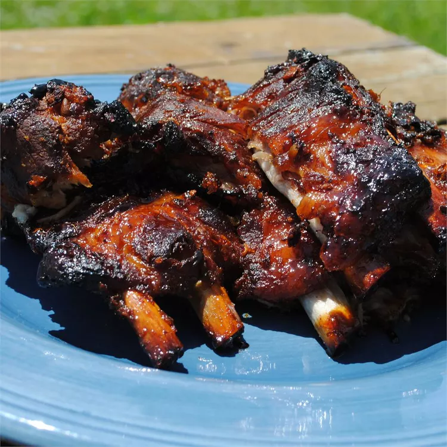

Home
Filipino Ribs

Description
Spareribs glazed with the sweet, tangy taste of the Philippines. One of the honey coating ingredients, star anise, is native to China; it is a star-shaped, dark brown pod that contains a pea-sized seed in each of its eight segments. Star anise is available at all Asian markets as well as many general grocery stores.
Ingredients
- 6 pounds pork spareribs
- 2 medium onions, cut into wedges
- 6 tablespoons soy sauce, divided
- ¼ teaspoon ground black pepper
- 6 whole star anise pods
- ½ cup water
- 1 tablespoon vegetable oil
- 1 medium onion, finely chopped
- 1 tablespoon grated fresh ginger
- ½ cup honey
- 2 tablespoons brown sugar
- 1 tablespoon Worcestershire sauce
- 1 tablespoon lemon juice
Steps
- Place ribs in a large stock pot with the 2 wedged onions, 4 tablespoons of soy sauce, pepper, and star anise pods. Add water and bring to a boil. Reduce heat to medium low, cover, and let simmer in meat juices until ribs are tender when pierced, about 1 ¼ hours. Stir occasionally.
- Meanwhile, heat oil in a medium skillet over medium heat. Add remaining chopped onion and sauté, stirring often, until onion is soft. Blend in the ginger, honey, sugar, Worcestershire sauce, lemon juice, and remaining 2 tablespoons of soy sauce. Cook all together, stirring, until well blended. Remove from heat./li>
- Preheat the oven to 400 degrees F (200 degrees C).
- Using tongs, remove ribs from the stock pot and arrange in a single layer in an 11x16-inch baking dish. Brush evenly with honey mixture and bake in the preheated oven, basting often with pan drippings, about 30 minutes or until ribs are well glazed.